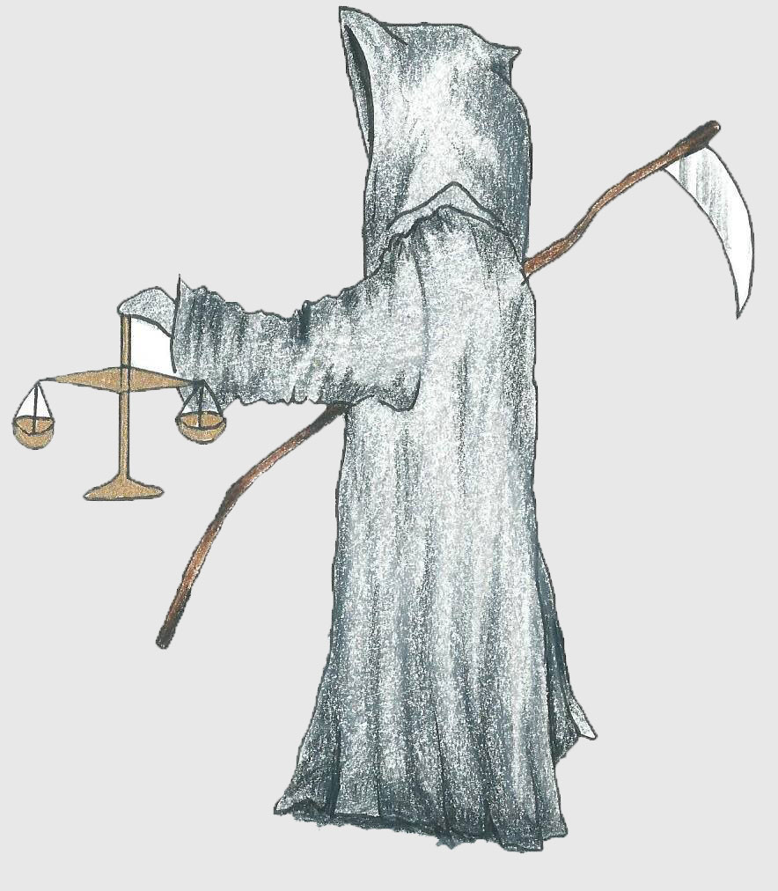

Smrtna kazen in človeške pravice
»Smrtna kazen krši pravico do življenja, kot razglaša deklaracija človekovih pravic in predstavlja skrajno zanikanje človekovih pravic.« (Amnesty International, 2014).
»Prav tako krši pravico, da človek ne sme biti podvržen mučenju in drugemu krutemu, nečloveškemu ali ponižujočemu ravnanju ali kaznovanju. Poleg tega smrtna kazen spodkopava človekovo dostojanstvo, ki je značilna za vsako človeško bitje« (International Commission-Against Death Penalty).
Po svetu deluje veliko organizacij, ki se borijo proti smrtni kazni in za širjenje pomena človekovih pravic: Amnesty International, Council of Europe, United Nations - Universal Declaration of Human Rights in World Coalition Against the Death Penalty (HG.org Legal resources).
